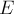
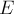
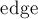

MAXimal
добавлено: 10 Jun 2009 21:03
редактировано: 24 May 2016 5:41
Содержание [скрыть]
Поток минимальной стоимости, циркуляция минимальной стоимости. Алгоритм удаления циклов отрицательного веса
Постановка задач
Пусть  — сеть (network), то есть ориентированный граф, в котором выбраны вершины-исток
— сеть (network), то есть ориентированный граф, в котором выбраны вершины-исток  и сток
и сток  . Множество вершин обозначим через
. Множество вершин обозначим через  , множество рёбер — через . Каждому ребру сопоставлены его пропускная способность и стоимость единицы потока . Если какого-то ребра
, множество рёбер — через . Каждому ребру сопоставлены его пропускная способность и стоимость единицы потока . Если какого-то ребра  в графе нет, то предполагается, что .
в графе нет, то предполагается, что .
Потоком (flow) в сети называется такая действительнозначная функция  , сопоставляющая каждой паре вершин поток между ними, и удовлетворяющая трём условиям:
, сопоставляющая каждой паре вершин поток между ними, и удовлетворяющая трём условиям:
- Ограничение пропускной способности (выполняется для любых ):

- Антисимметричность (выполняется для любых ):

- Сохранение потока (выполняется для любых , кроме , ):
Величиной потока называется величина
Стоимостью потока называется величина
Задача нахождения потока минимальной стоимости заключается в том, что по заданной величине потока  требуется найти поток, обладающий минимальной стоимостью . Стоит обратить внимание на то, что стоимости , приписанные рёбрам, отвечают за стоимость единицы потока вдоль этого ребра; иногда встречается задача, когда рёбрам сопоставляются стоимости протекания потока вдоль этого ребра (т.е. если протекает поток любой величины, то взимается эта стоимость, независимо от величины потока) — эта задача не имеет ничего общего с рассматриваемой здесь и, более того, является NP-полной.
требуется найти поток, обладающий минимальной стоимостью . Стоит обратить внимание на то, что стоимости , приписанные рёбрам, отвечают за стоимость единицы потока вдоль этого ребра; иногда встречается задача, когда рёбрам сопоставляются стоимости протекания потока вдоль этого ребра (т.е. если протекает поток любой величины, то взимается эта стоимость, независимо от величины потока) — эта задача не имеет ничего общего с рассматриваемой здесь и, более того, является NP-полной.
Задача нахождения максимального потока минимальной стоимости заключается в том, чтобы найти поток наибольшей величины, а среди всех таких — с минимальной стоимостью. В частном случае, когда веса всех рёбер одинаковы, эта задача становится эквивалентной обычной задаче о максимальном потоке.
Задача нахождения циркуляции минимальной стоимости заключается в том, чтобы найти поток нулевой величины с минимальной стоимостью. Если все стоимости неотрицательные, то, понятно, ответом будет нулевой поток ; если же есть рёбра отрицательного веса (а, точнее, циклы отрицательного веса), то даже при нулевом потоке возможно найти поток отрицательной стоимости. Задачу нахождения циркуляции минимальной стоимости можно, разумеется, поставить и на сети без истока и стока, поскольку никакой смысловой нагрузки они не несут (впрочем, в такой граф можно добавить исток и сток в виде изолированных вершин и получить обычную по формулировке задачу). Иногда ставится задача нахождения циркуляции максимальной стоимости — понятно, достаточно изменить стоимости рёбер на противоположные и получим задачу нахождения циркуляции уже минимальной стоимости.
Все эти задачи, разумеется, можно перенести и на неориентированные графы. Впрочем, перейти от неориентированного графа к ориентированному легко: каждое неориентированное ребро с пропускной способностью и стоимостью следует заменить двумя ориентированными рёбрами и с одинаковыми пропускными способностями и стоимостями.
Остаточная сеть
Концепция остаточной сети основана на следующей простой идее. Пусть есть некоторый поток ; вдоль каждого ребра протекает некоторый поток . Тогда вдоль этого ребра можно (теоретически) пустить ещё единиц потока; эту величину и назовём остаточной пропускной способностью:
Однако помимо этого, прямого ребра , в остаточной сети появляется и обратное ребро . Интуитивный смысл этого ребра в том, что мы можем в будущем отменить часть потока, протекавшего по ребру . Соответственно, пропускание потока вдоль этого обратного ребра фактически, и формально, означает уменьшение потока вдоль ребра . Обратное ребро имеет пропускную способность, равную нулю (чтобы, например, при и по обратному ребру невозможно было бы пропустить поток; при положительной величине 0"> для обратного ребра по свойству антисимметричности станет , что меньше , т.е. можно будет пропускать какой-то поток вдоль обратного ребра), остаточную пропускную способность — равную потоку вдоль прямого ребра, а стоимость — противоположную (ведь после отмены части потока мы должны соответственно уменьшить и стоимость):
Таким образом, каждому ориентированному ребру в соответствует два ориентированных ребра в остаточной сети , и у каждого ребра остаточной сети появляется дополнительная характеристика — остаточная пропускная способность. Впрочем, нетрудно заметить, что выражения для остаточной пропускной способности по сути одинаковы как для прямого, так и для обратного ребра, т.е. мы можем записать для любого ребра остаточной сети:
Следует отметить, что из остаточной сети удаляются все рёбра, имеющие нулевую остаточную пропускную способность. Остаточная сеть должна содержать только рёбра с положительной остаточной пропускной способностью .
Здесь стоит обратить внимание на такой важный момент: если в сети были одновременно оба ребра и , то в остаточной сети у каждого из них появится по обратному ребру, и в итоге появятся кратные рёбра. Например, такая ситуация часто возникает, когда сеть строится по неориентированному графу (и, получается, каждое неориентированное ребро в итоге приведёт к появлению четырёх рёбер в остаточной сети). Эту особенность нужно всегда помнить, она приводит к небольшому усложнению программирования, хотя в общем ничего не меняет. Кроме того, обозначение ребра в таком случае становится неоднозначным, поэтому ниже мы везде будем считать, что такой ситуации в сети нет (исключительно в целях простоты и корректности описаний; на правильность идей это никак не влияет).
Критерий оптимальности по наличию циклов отрицательного веса
Теорема. Некоторый поток является оптимальным (т.е. имеет наименьшую стоимость среди всех потоков такой же величины) тогда и только тогда, когда остаточная сеть не содержит циклов отрицательного веса.
Доказательство: необходимость. Пусть поток является оптимальным. Предположим, что остаточная сеть содержит цикл отрицательного веса. Возьмём этот цикл отрицательного веса и выберем минимум  среди остаточных пропускных способностей рёбер этого цикла ( будет больше нуля). Но тогда можно увеличить поток вдоль каждого ребра цикла на величину , при этом никакие свойства потока не нарушатся, величина потока не изменится, однако стоимость потока уменьшится (уменьшится на стоимость цикла, умноженную на ). Таким образом, если есть цикл отрицательного веса, то не может быть оптимальным, ч.т.д.
среди остаточных пропускных способностей рёбер этого цикла ( будет больше нуля). Но тогда можно увеличить поток вдоль каждого ребра цикла на величину , при этом никакие свойства потока не нарушатся, величина потока не изменится, однако стоимость потока уменьшится (уменьшится на стоимость цикла, умноженную на ). Таким образом, если есть цикл отрицательного веса, то не может быть оптимальным, ч.т.д.
Доказательство: достаточность. Для этого сначала докажем вспомогательные факты.
Лемма 1 (о декомпозиции потока): любой поток можно представить в виде совокупности путей из истока в сток и циклов, все — имеющие положительный поток. Докажем эту лемму конструктивно: покажем, как разбить поток на совокупность путей и циклов. Если поток имеет ненулевую величину, то, очевидно, из истока выходит хотя бы одно ребро с положительным потоком; пройдём по этому ребру, окажемся в какой-то вершине  . Если эта вершина , то останавливаемся — нашли путь из в . Иначе, по свойству сохранения потока, из должно выходить хотя бы одно ребро с положительным потоком; пройдём по нему в какую-то вершину . Повторяя этот процесс, мы либо придём в сток , либо же придём в какую-то вершину во второй раз. В первом случае мы обнаружим путь из в , во втором — цикл. Найденный путь/цикл будет иметь положительный поток (минимум из потоков рёбер этого пути/цикла). Тогда уменьшим поток вдоль каждого ребра этого пути/цикла на величину , в результате получим снова поток, к которому снова применим этот процесс. Рано или поздно поток вдоль всех рёбер станет нулевым, и мы найдём его декомпозицию на пути и циклы.
. Если эта вершина , то останавливаемся — нашли путь из в . Иначе, по свойству сохранения потока, из должно выходить хотя бы одно ребро с положительным потоком; пройдём по нему в какую-то вершину . Повторяя этот процесс, мы либо придём в сток , либо же придём в какую-то вершину во второй раз. В первом случае мы обнаружим путь из в , во втором — цикл. Найденный путь/цикл будет иметь положительный поток (минимум из потоков рёбер этого пути/цикла). Тогда уменьшим поток вдоль каждого ребра этого пути/цикла на величину , в результате получим снова поток, к которому снова применим этот процесс. Рано или поздно поток вдоль всех рёбер станет нулевым, и мы найдём его декомпозицию на пути и циклы.
Лемма 2 (о разности потоков): для любых двух потоков и  одной величины () поток можно представить как поток плюс несколько циклов в остаточной сети . Действительно, рассмотрим разность этих потоков (вычитание потоков — это почленное вычитание, т.е. вычитание потоков вдоль каждого ребра). Нетрудно убедиться, что в результате получится некоторый поток нулевой величины, т.е. циркуляция. Произведём декомпозицию этой циркуляции согласно предыдущей лемме. Очевидно, это декомпозиция не может содержать путей (т.к. наличие --пути с положительным потоком означает, что и величина потока в сети положительна). Таким образом, разность потоков и можно представить в виде суммы циклов в сети . Более того, это будут и циклы в остаточной сети , т.к.
одной величины () поток можно представить как поток плюс несколько циклов в остаточной сети . Действительно, рассмотрим разность этих потоков (вычитание потоков — это почленное вычитание, т.е. вычитание потоков вдоль каждого ребра). Нетрудно убедиться, что в результате получится некоторый поток нулевой величины, т.е. циркуляция. Произведём декомпозицию этой циркуляции согласно предыдущей лемме. Очевидно, это декомпозиция не может содержать путей (т.к. наличие --пути с положительным потоком означает, что и величина потока в сети положительна). Таким образом, разность потоков и можно представить в виде суммы циклов в сети . Более того, это будут и циклы в остаточной сети , т.к.  , ч.т.д.
, ч.т.д.
Теперь, вооружившись этими леммами, мы легко можем доказать достаточность. Итак, рассмотрим произвольный поток , в остаточной сети которого нет циклов отрицательной стоимости. Рассмотрим также поток той же величины, но минимальной стоимости ; докажем, что и имеют одинаковую стоимость. Согласно лемме 2, поток можно представить в виде суммы потока и нескольких циклов. Но раз стоимости всех циклов неотрицательны, то и стоимость потока не может быть меньше стоимости потока : . С другой стороны, т.к. поток является оптимальным, то его стоимость не может быть выше стоимости потока . Таким образом, , ч.т.д.
Алгоритм удаления циклов отрицательного веса
Только что доказанная теорема даёт нам простой алгоритм, позволяющий найти поток минимальной стоимости: если у нас есть какой-то поток , то построить для него остаточную сеть, проверить, есть ли в ней цикл отрицательного веса. Если такого цикла нет, то поток является оптимальным (имеет наименьшую стоимость среди всех потоков такой же величины). Если же был найден цикл отрицательной стоимости, то посчитать поток , который можно пропустить дополнительно через этот цикл (это будет равно минимуму из остаточных пропускных способностей рёбер цикла). Увеличив поток на вдоль каждого ребра цикла, мы, очевидно, не нарушим свойства потока, не изменим величину потока, но уменьшим стоимость этого потока, получив новый поток , для которого надо повторить весь процесс.
Таким образом, чтобы запустить процесс улучшения стоимости потока, нам предварительно нужно найти произвольный поток нужной величины (каким-нибудь стандартным алгоритмом нахождения максимального потока, см., например, алгоритм Эдмондса-Карпа). В частности, если требуется найти циркуляцию наименьшей стоимости, то начать можно просто с нулевого потока.
Оценим асимптотику алгоритма. Поиск цикла отрицательной стоимости в графе с  вершинами и
вершинами и  рёбрами производится за
рёбрами производится за  (см. соответствующую статью). Если мы обозначим через
(см. соответствующую статью). Если мы обозначим через  наибольшее из стоимостей рёбер, через
наибольшее из стоимостей рёбер, через  — наибольшую из пропускных способностей, то максимальное значение стоимости потока не превосходит . Если все стоимости и пропускные способности — целые числа, то каждая итерация алгоритма уменьшает стоимость потока как минимум на единицу; следовательно, всего алгоритм совершит
— наибольшую из пропускных способностей, то максимальное значение стоимости потока не превосходит . Если все стоимости и пропускные способности — целые числа, то каждая итерация алгоритма уменьшает стоимость потока как минимум на единицу; следовательно, всего алгоритм совершит  итераций, а итоговая асимптотика составит:
итераций, а итоговая асимптотика составит:
Эта асимптотика — не строго полиномиальна (strong polynomial), поскольку зависит от величин пропускных способностей и стоимостей.
Впрочем, если искать не произвольный отрицательный цикл, а использовать какой-то более чёткий подход, то асимптотика может значительно уменьшиться. Например, если каждый раз искать цикл с минимальной средней стоимостью (что также можно производить за ), то время работы всего алгоритма можно оценить строго полиномиальной асимптотикой .
Реализация
Сначала введём структуры данных и функции для хранения графа. Каждое ребро хранится в отдельной структуре , все рёбра лежат в общем списке , а для каждой вершины  в векторе хранятся номера рёбер, выходящих из неё. Такая организация позволяет легко находить номер обратного ребра по номеру прямого ребра — они оказываются в списке соседними, и номер одного можно получить по номеру другого операцией "^1" (она инвертирует младший бит). Добавление ориентированного ребра в граф осуществляет функция , которая добавляет сразу прямое и обратное рёбра.
в векторе хранятся номера рёбер, выходящих из неё. Такая организация позволяет легко находить номер обратного ребра по номеру прямого ребра — они оказываются в списке соседними, и номер одного можно получить по номеру другого операцией "^1" (она инвертирует младший бит). Добавление ориентированного ребра в граф осуществляет функция , которая добавляет сразу прямое и обратное рёбра.
const int MAXN = 100*2; int n; struct edge { int v, to, u, f, c; }; vector<edge> edges; vector<int> g[MAXN]; void add_edge (int v, int to, int cap, int cost) { edge e1 = { v, to, cap, 0, cost }; edge e2 = { to, v, 0, 0, -cost }; g[v].push_back ((int) edges.size()); edges.push_back (e1); g[to].push_back ((int) edges.size()); edges.push_back (e2); }
В основной программе после чтения графа идёт бесконечный цикл, внутри которого выполняется алгоритм Форда-Беллмана, и если он обнаруживает цикл отрицательной стоимости, то вдоль этого цикла увеличивается поток. Поскольку остаточная сеть может представлять собой несвязный граф, то алгоритм Форда-Беллмана запускается из каждой не достигнутой ещё вершины. В целях оптимизации алгоритм использует очередь (текущая очередь  и новая очередь
и новая очередь  ), чтобы не перебирать на каждой стадии все рёбра. Вдоль обнаруженного цикла каждый раз проталкивается ровно единица потока, хотя, понятно, в целях оптимизации величину потока можно определять как минимум остаточных пропускных способностей.
), чтобы не перебирать на каждой стадии все рёбра. Вдоль обнаруженного цикла каждый раз проталкивается ровно единица потока, хотя, понятно, в целях оптимизации величину потока можно определять как минимум остаточных пропускных способностей.
const int INF = 1000000000; for (;;) { bool found = false; vector<int> d (n, INF); vector<int> par (n, -1); for (int i=0; i<n; ++i) if (d[i] == INF) { d[i] = 0; vector<int> q, nq; q.push_back (i); for (int it=0; it<n && q.size(); ++it) { nq.clear(); sort (q.begin(), q.end()); q.erase (unique (q.begin(), q.end()), q.end()); for (size_t j=0; j<q.size(); ++j) { int v = q[j]; for (size_t k=0; k<g[v].size(); ++k) { int id = g[v][k]; if (edges[id].f < edges[id].u) if (d[v] + edges[id].c < d[edges[id].to]) { d[edges[id].to] = d[v] + edges[id].c; par[edges[id].to] = v; nq.push_back (edges[id].to); } } } swap (q, nq); } if (q.size()) { int leaf = q[0]; vector<int> path; for (int v=leaf; v!=-1; v=par[v]) if (find (path.begin(), path.end(), v) == path.end()) path.push_back (v); else { path.erase (path.begin(), find (path.begin(), path.end(), v)); break; } for (size_t j=0; j<path.size(); ++j) { int to = path[j], v = path[(j+1)%path.size()]; for (size_t k=0; k<g[v].size(); ++k) if (edges[ g[v][k] ].to == to) { int id = g[v][k]; edges[id].f += 1; edges[id^1].f -= 1; } } found = true; } } if (!found) break; }
Литература
- Томас Кормен, Чарльз Лейзерсон, Рональд Ривест, Клиффорд Штайн. Алгоритмы: Построение и анализ [2005]
- Ravindra Ahuja, Thomas Magnanti, James Orlin. Network flows [1993]
- Andrew Goldberg, Robert Tarjan. Finding Minimum-Cost Circulations by Cancelling Negative Cycles [1989]